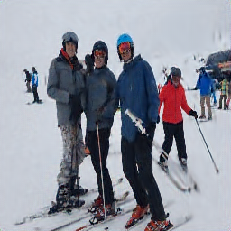

A new year is approaching, which means that it’s time for everybody to think about new-years resolutions to improve your life. An ideal moment to take your new-years resolution and turn it into a super-resolution image!
For the sake of learning, I decided to train a network that can take a picture of me, and turn it into a super-resolution image which shows better behaviour. The end result looks like this, where left is me drinking a beer, and right is the neural network output in super-resolution of me sporting more.

About super-resolution
Super-resolution is the neural network equivalent of shouting “ENHANCE”. If you have an image with a low resolution, you try to find a way to “guess” what a higher resolution image looks like. Normally this looks something like this:

People started using neural networks for this (of which this post gives a nice overview: https://medium.com/beyondminds/an-introduction-to-super-resolution-using-deep-learning-f60aff9a499d), and I guess that my photorealistic gameboy camera work (../photorealistic-neural-network-gameboy/index.html) also counts in a way.
The idea
Let’s as a new years resolution set that I want to drink less beer, and sport more. What I want to achieve is training a neural network that can take an image of me taking beer, and outputs a higher-resolution (super-resolution) image of me doing sports.
{kind=link}
{kind=link}
I decided to implement a simple network in keras and overfit it to two images. The network takes a single input and outputs a single image. The output in the end looks like this: 
{kind=link}
As you can see it does a relatively good job given that there is no relation between input and output of the image. What’s interesting is that it manage to capture the detail of some people quite well, but the mountains have been reduced to a bit of blur…
Why does this work?
Anybody who works with neural networks knows / should know that neural networks are good at overfitting, and can learn non-relevant relations. In this case I’m hoping that the neural network can learn to over-fit the relation between input and output image patches.
What makes the task harder in this case is the fact that the network is fully convolutional. As a convolutional kernel is location-invariant the kernels really have to learn to encode all possible input-output image patches. I suspect that this is also the reason the training takes quite a while.
What’s important to note is that you can’t just put any image in (it isn’t a pure bias learning). I show this at the end of the code with a picture of me with a self-driving car. It’s really all about training a network to go from image patch to image patch. With an alternative input image the output looks like this:
{kind=link}
Is this useful?
No, please do not copy anything from this except for making your own new-years super-resolution. Not only did I not spend any time making this good or work well, it’s also not more than an interesting experiment to see how much you can overfit neural networks to useless tasks. What might be interesting for people is experimenting what parameters contribute to the speed of overfitting. Have fun playing around with it and let me know if you make something interesting!
In [0]:
import os.path
if not os.path.isfile('beer.jpeg'):
!wget images/2019/12/beer.jpeg
!wget images/2019/12/ski.jpeg
!wget images/2019/02/profile1jpg.jpg
In [2]:
import tensorflow as tf
import numpy as np
import matplotlib.pyplot as plt
import cv2
class DataGenerator(tf.keras.utils.Sequence):
def __init__(self, last_year_images, next_year_images, input_shape):
assert len(last_year_images) == len(next_year_images)
self.inputs = list()
self.outputs = list()
for filename in last_year_images:
image = cv2.imread(filename)
# SECOND NEW YEARS RESOLUTION: DO NOT FORGET THIS CONVERSION BEFORE A DEMO
image = cv2.cvtColor(image, cv2.COLOR_BGR2RGB)
image = cv2.resize(image, (input_shape, input_shape))
image = image.astype(np.float32)/255.0
self.inputs.append(image)
for filename in next_year_images:
image = cv2.imread(filename)
# SECOND NEW YEARS RESOLUTION: DO NOT FORGET THIS CONVERSION BEFORE A DEMO
image = cv2.cvtColor(image, cv2.COLOR_BGR2RGB)
image = cv2.resize(image, (2*input_shape, 2*input_shape))
image = image.astype(np.float32)/255.0
self.outputs.append(image)
self.inputs = np.array(self.inputs)
self.outputs = np.array(self.outputs)
def __len__(self):
return 1 # only one: all inputs and outputs...
def __getitem__(self, index):
return self.inputs, self.outputs
last_year_images = ["beer.jpeg"]
next_year_images = ["ski.jpeg"]
INPUT_SHAPE = 128
SIZE_CONV = 5
generator = DataGenerator(last_year_images, next_year_images, INPUT_SHAPE)
model = tf.keras.models.Sequential()
model.add(tf.keras.layers.Input((INPUT_SHAPE, INPUT_SHAPE, 3)))
for i in range(5):
model.add(tf.keras.layers.Conv2D(32, SIZE_CONV, padding='same', activation='relu'))
model.add(tf.keras.layers.Conv2DTranspose(32, SIZE_CONV, strides=2, padding='same', activation='relu'))
for i in range(5):
model.add(tf.keras.layers.Conv2D(32, SIZE_CONV, padding='same', activation='relu'))
model.add(tf.keras.layers.Conv2D(3, SIZE_CONV, padding='same', activation='relu'))
model.compile(optimizer=tf.keras.optimizers.Adam(), loss='mse')
The default version of TensorFlow in Colab will soon switch to TensorFlow 2.x.
We recommend you upgrade now
or ensure your notebook will continue to use TensorFlow 1.x via the %tensorflow_version 1.x magic:
more info.
WARNING:tensorflow:From /usr/local/lib/python3.6/dist-packages/tensorflow_core/python/ops/resource_variable_ops.py:1630: calling BaseResourceVariable.__init__ (from tensorflow.python.ops.resource_variable_ops) with constraint is deprecated and will be removed in a future version.
Instructions for updating:
If using Keras pass *_constraint arguments to layers.
In [0]:
class ShowImageCallback(tf.keras.callbacks.Callback):
def __init__(self):
pass
def on_batch_end(self, batch, logs={}):
# if batch in [100, 500, 1000, 1500]: # Show output for specific batches
if batch %100 == 0:
inp, gt = generator[0]
predicted = self.model.predict(inp)
#predicted = np.clip(predicted[0].astype('float') / 255.0, 0.0, 1.0)
predicted = np.clip(predicted[0], 0.0, 1.0)
plt.imshow(predicted)
plt.show()
model.fit_generator(generator, steps_per_epoch=2000, callbacks = [ShowImageCallback()])
In [0]:
inp, gt = generator[0]
print("Input image:")
plt.imshow(inp[0])
plt.show()
print("Ground truth output:")
plt.imshow(gt[0])
plt.show()
predicted = model.predict(inp)
predicted = np.clip(predicted[0], 0.0, 1.0)
print("My super-resolution:")
plt.imshow(predicted)
plt.imsave('/content/predicted.png', predicted)
test_generator = DataGenerator(["profile1jpg.jpg"], next_year_images, INPUT_SHAPE)
inp, gt = test_generator[0]
print("Using a different image as input:")
plt.imshow(inp[0])
plt.show()
predicted = model.predict(inp)
predicted = np.clip(predicted[0].astype('float'), 0.0, 1.0)
print("Output when using a different image:")
plt.imshow(predicted)
plt.imsave('/content/predicted_wrong.png', predicted)